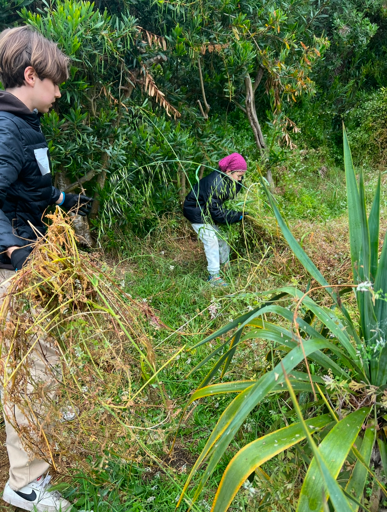
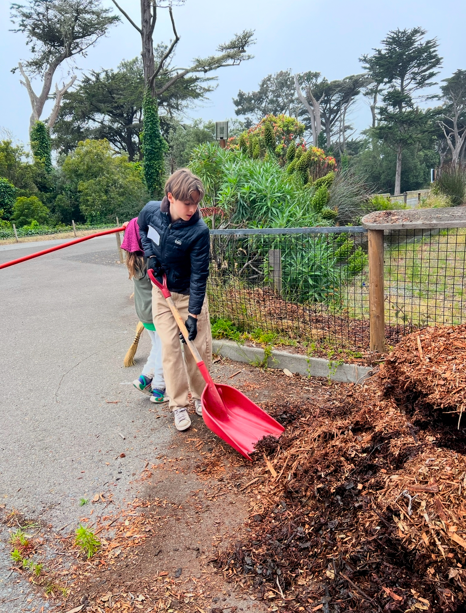
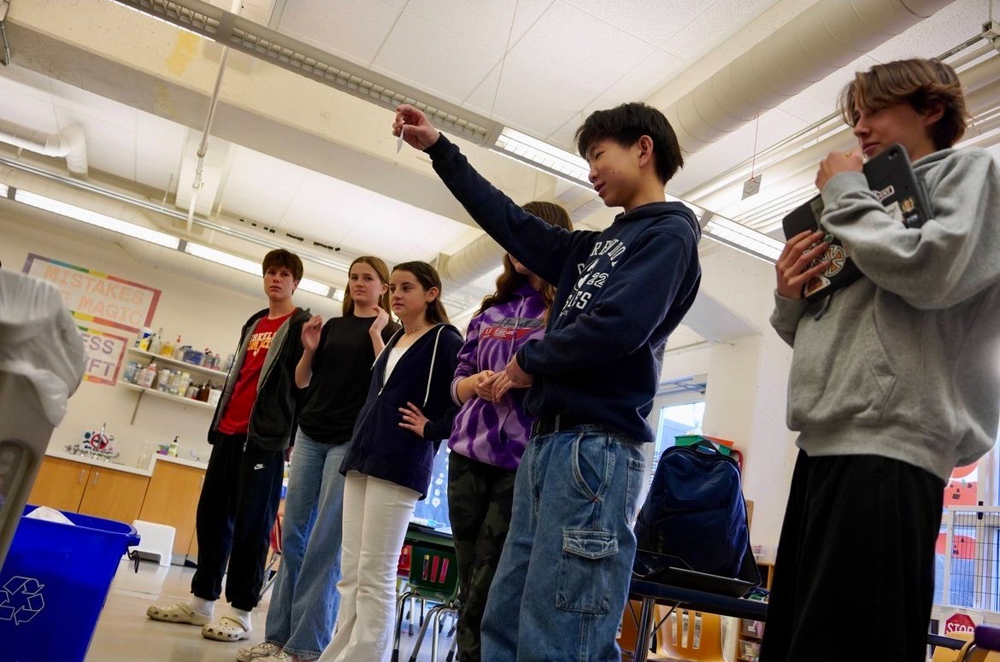
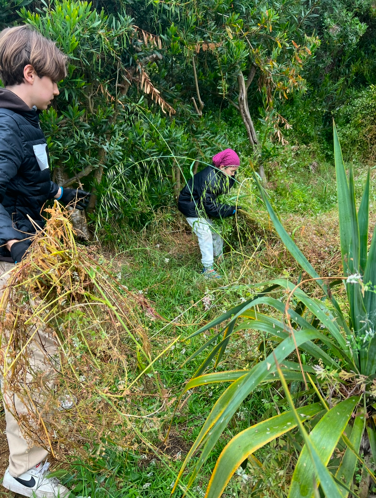
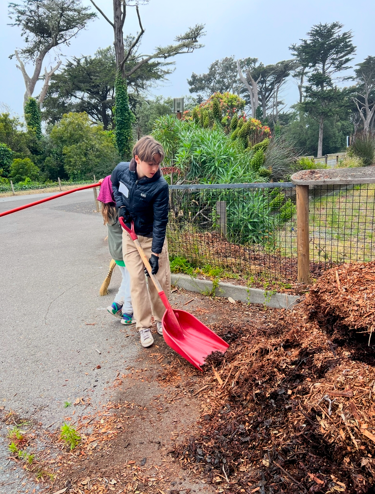
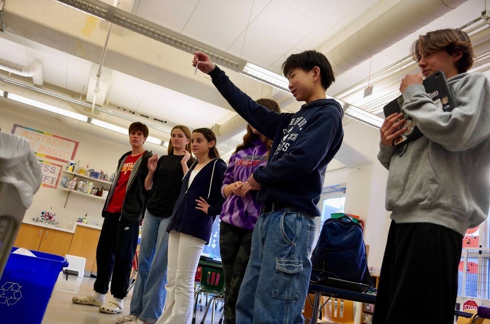
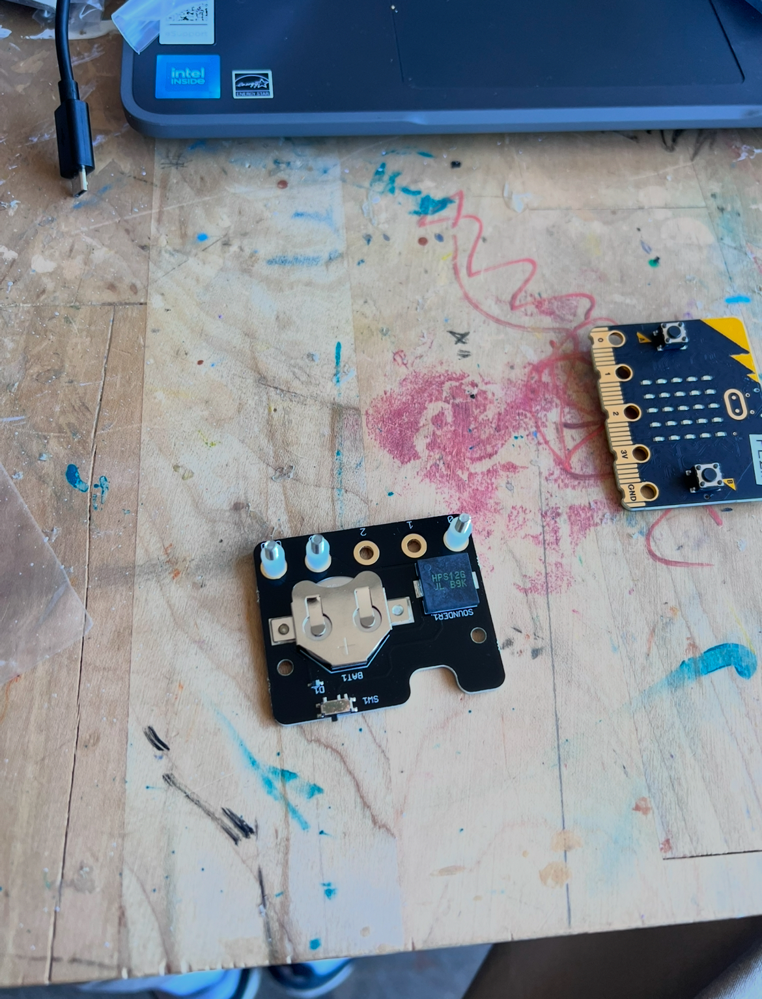
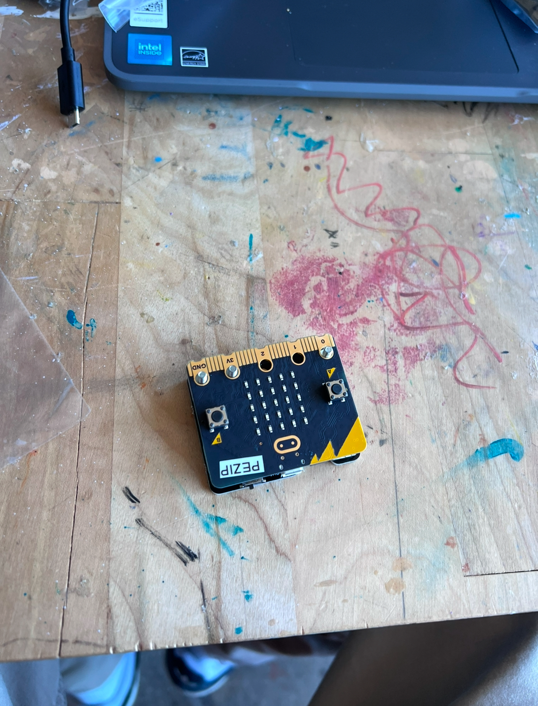

Service
SF Zoo Habitat Conservation and Green Team - I volunteer at SF Zoo in habitat conservation and vegetation management. I am a member of the Live Oak Green Team. We spread awareness and educate younger students about environmental sustainability.
-
 





-
Tech Internship - I volunteered at my school this summer to prepare iPads for the upcoming school year, support mobile device management, reimage devices, and test classroom equipment. I also helped clean and organize the ChangeMaker Lab and set up projects for the school year. It was a great way to use my tech skills to help my school.
-
 -
Volunteer at math festival - I also enjoyed volunteering at my school's math festival last February, teaching people how to play math games! I have already signed up to volunteer again at this year's event.